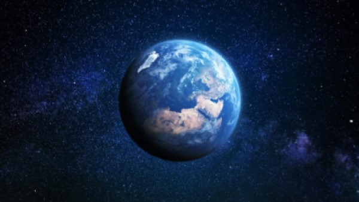
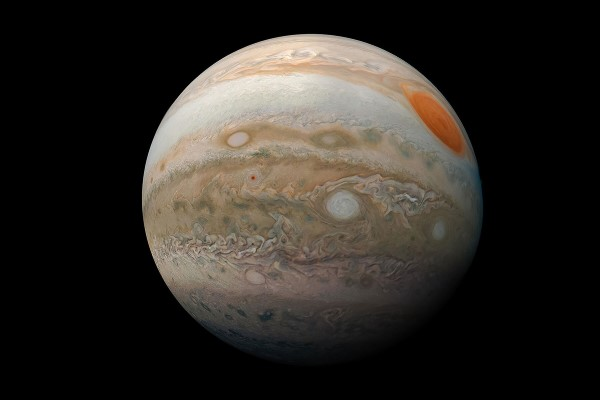
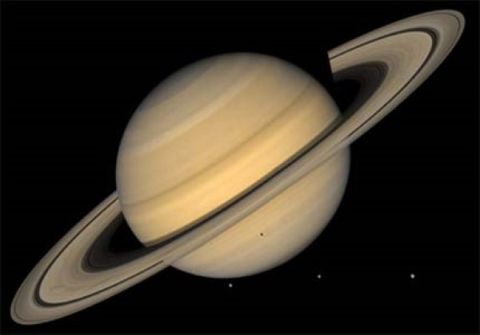
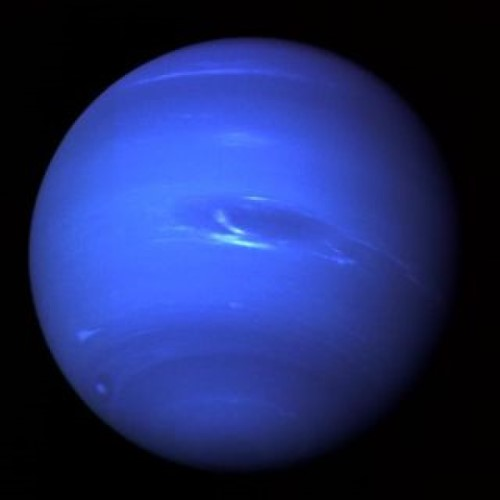

Planetary Data
| Planet Name |
Mass(1024 kg) |
Diameter(km) |
Mean Density(kg/m3) |
Escape Velocity(m/s) |
Average Distance from Sun (km) |
Rotation Period(hours) |
Revolution Period(days) |
| Earth |
5.98 |
12,756 |
5,520 |
11,200 |
149,597,890 |
23.93 |
365.26 |
| Jupiter |
1900 |
142,800 |
1314 |
59,500 |
778,412,020 |
9.8 |
4331 |
| Saturn |
569 |
120,660 |
690 |
35,600 |
1,426,725,400 |
10.2 |
10,747 |
| Neptune |
102 |
49,528 |
1640 |
23,300 |
4,298,252,900 |
16.1 |
59,800 |
Images and Fun Facts

- There is only one natural satellite of the planet Earth which is the Moon.
- The Earth’s rotation is gradually slowing.
- Earth is the only planet not named after a god.

- Jupiter has the shortest day of all the planets.
- The Great Red Spot is a huge storm on Jupiter.
- Eight spacecrafts have visited Jupiter.

- Saturn is the flattest planet.
- Saturn is made mostly of hydrogen.
- Saturn has 150 moons and smaller moonlets.

- Neptune is the smallest of the ice giants.
- The atmosphere of Neptune is made of hydrogen and helium, with some methane.
- Only one spacecraft has flown by Neptune.